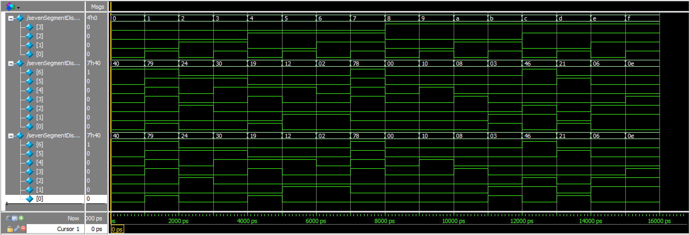

Lab 3: Keypad Scanner
Introduction
The goal of this lab is to read a 4 x 4 matrix keypad and display the last two digits on a dual 7-segment display, with the most recent entry appearing on the right. Each key press should only register once, and additional key inputs when a button is held down should be ignored.
FPGA Design
Objective
The objective of this lab is to build upon the work done in Lab 2, by adding the addition of a keypad for inputs. This brings an additional layer of complexity, by making sure that we synchronize asynchronous outputs, eliminate switch bouncing, and making sure that buttons are only registered once.
Design
Synchronizing asynchronous inputs
Metastability occurs with this keypad when key inputs occur too close to a rising edge of the clock, causing asynchrony. To fix this, we can use a two stage synchronizer, which involves using two flip flops to synchronize our keypad input and have a stable input going into the FSM. This is done in this lab by synchronizing my column inputs, with the synchronizer module.
Accounting for switch bouncing
All mechanical switches have a phenomenom called switch bouncing, where the input signals by the switch oscillate quickly between on and off as the button is getting clicked. This occurs until the button is fully clicked and the input signal becomes stable. To account for this and not read mistake one key press for multiple key presses, I used SystemVerilog code to add a delay between reading inputs in my FSM. This will prevent a single key input being mistaken as multiple inputs.
Block Diagram
My approach to this lab consists of eight different modules. It was designed to have many modules to make testing the functionality of each function of this lab easily. An overarching top level module called lab3_cw, which will be programmed to the board, and seven submodules synchronizer, keypadFSM, keypad, sevenSegDigits, timeMultiplexer, sevenSegMux and sevenSegDisplay. The synchronizer submodule will synchronize my keypad inputs using a simple two stage synchronizer with two flip flops. The keypadFSM submodule is an FSM that controls how to detect keypad presses and what to do with it. It also implements switch debouncing. The keypad submodule helps decode what number corresponds to each row and column on the 4 x 4 keypad. The sevenSegDigits submodule is responsible for shifting the digits on the dual 7-segment display based on what the FSM tells it to do. The timeMultiplexer submodule is the same as in lab 2, and is responsible for controlling which common anode gets turned on in the dual 7-segment display. The sevenSegMux submodule is the same as in lab 2, and is a mux that controls which four bit input will be fed into sevenSegmentDisplay based on the enable, signal, which is given by timeMultiplexer. The sevenSegmentDisplay submodule is the same one that was used in Lab 1 and 2, which will control the outputs on the 7-segment display, displaying the hexadecimal value provided by the dip switches, s1[3:0] and s2[3:0]. It was designed to switch at 500 Hz, which should be high enough to not be noticeable to the human eye. It will also output a signal to guide which input should be used by the sevenSegmentDisplay module, which is controlled by sevenSegMux. The top level lab3_cw calls upon all these submodules as well as the HSOSC submodule, which takes advantage of the onboard 48 MHz clock on the FPGA. Below is the block diagram I used to create this project:
synchronizer Design
The synchronizer submodule was a very simple design. It consisted of a two stage synchronizer by utilizing two flip flops to synchronize our asynchronous inputs.
Below is the code block that was used for this submodule:
// Christian Wu
// chrwu@g.hmc.edu
// 09/13/25
// This module is a simple two-stage synchronizer to safely bring an asynchronous input signal
// into the clock domain of the provided clock signal. This helps to prevent metastability issues.
module synchronizer (
input logic clk,
input logic reset,
input logic [3:0] in,
output logic [3:0] out);
logic [3:0] mid;
always_ff @(posedge clk) begin
if (reset) begin
mid <= 4'b0000;
out <= 4'b0000;
end else begin
mid <= in;
out <= mid;
end
end
endmoduleKeypad FSM Design
The FSM was designed to have 12 states. In order to detect key presses, I would rotate between scanning each row, one at a time until detecting a key input. Then it would move into the debounce state where it would have a 50 ms delay for debouncing, and then go to the hold state if the input is stable.
Some mechanical switches only bounce for 10 - 20 ms, so my debouncing method accounts for all of it and makes sure that keys are debounced. However, tradeoffs for this is that responses might be slow due to the long debounce time and the slow time between moving state to state, which goes at 1 kHz. But for the purposes of this lab, it seems pretty reasonable to go at 50 ms, since we cannot really exploit the long debounce times as it is not noticeable to the human eye and reaction speed. Another limitation is the need for an extra four states for debouncing. Right now, I am utilizing 4 bits of state, while only using 12 states, so I am wasting 4 states. If I did not have 4 bits of debouncing state, I could use just 3 bits of state and fully utilize it.
Here is my FSM State Transition Diagram:
Here is a state transition table for switching states:
| Current State | Condition | Next State |
|---|---|---|
| S0 | buttonPressed && oneButtonPressed |
S4 |
| S0 | !(buttonPressed && oneButtonPressed) |
S1 |
| S1 | buttonPressed && oneButtonPressed |
S6 |
| S1 | !(buttonPressed && oneButtonPressed) |
S2 |
| S2 | buttonPressed && oneButtonPressed |
S8 |
| S2 | !(buttonPressed && oneButtonPressed) |
S3 |
| S3 | buttonPressed && oneButtonPressed |
S10 |
| S3 | !(buttonPressed && oneButtonPressed) |
S0 |
| S4 | !buttonPressed || !oneButtonPressed |
S1 |
| S4 | counter >= 50 |
S5 |
| S4 | buttonPressed && oneButtonPressed && counter < 50 |
S4 |
| S5 | !originalStillPressed |
S1 |
| S5 | originalStillPressed |
S5 |
| S6 | !buttonPressed || !oneButtonPressed |
S2 |
| S6 | counter >= 50 |
S7 |
| S6 | buttonPressed && oneButtonPressed && counter < 50 |
S6 |
| S7 | !originalStillPressed |
S2 |
| S7 | originalStillPressed |
S7 |
| S8 | !buttonPressed || !oneButtonPressed |
S3 |
| S8 | counter >= 50 |
S9 |
| S8 | buttonPressed && oneButtonPressed && counter < 50 |
S8 |
| S9 | !originalStillPressed |
S3 |
| S9 | originalStillPressed |
S9 |
| S10 | !buttonPressed || !oneButtonPressed |
S0 |
| S10 | counter >= 50 |
S11 |
| S10 | buttonPressed && oneButtonPressed && counter < 50 |
S10 |
| S11 | !originalStillPressed |
S0 |
| S11 | originalStillPressed |
S11 |
Here is a state transition table for my outputs:
| State Group | row Output | en Signal | rc Output |
|---|---|---|---|
| S0, S4, S5 | 4’b0001 | 1 when S4→S5 | {rowPressed, col} |
| S1, S6, S7 | 4’b0010 | 1 when S6→S7 | {rowPressed, col} |
| S2, S8, S9 | 4’b0100 | 1 when S8→S9 | {rowPressed, col} |
| S3, S10, S11 | 4’b1000 | 1 when S10→S11 | {rowPressed, col} |
Here is the code for this submodule:
// Christian Wu
// chrwu@g.hmc.edu
// 09/15/25
// This module implements a finite state machine (FSM) to scan a 4x4 keypad.
// It drives the rows and reads the columns to detect key presses, with
// debouncing and single key press detection. The FSM operates at 1kHz,
// with a debounce period of 50ms. The design ensures that only one key
// press is registered at a time, and it waits for the key to be released
// before allowing another key press to be detected.
module keypadFSM (
input logic clk,
input logic reset,
input logic [3:0] col,
output logic [3:0] row,
output logic [7:0] rc,
output logic en);
typedef enum logic [3:0] {
S0, // Row0 scan
S1, // Row1 scan
S2, // Row2 scan
S3, // Row3 scan
S4, // Row0 debounce
S5, // Row0 hold
S6, // Row1 debounce
S7, // Row1 hold
S8, // Row2 debounce
S9, // Row2 hold
S10, // Row3 debounce
S11 // Row3 hold
} state_t;
state_t state, nextState;
logic [3:0] activeCol;
logic buttonPressed, oneButtonPressed;
logic [3:0] rowPressed;
logic [3:0] originalButton;
logic originalStillPressed;
logic [7:0] counter;
logic [18:0] fsm_counter;
logic fsm_tick;
parameter FSM_TICK_COUNT = 19'd48_000;
parameter DEBOUNCE_COUNT = 8'd50;
// 1kHz tick generator for FSM state transitions
always_ff @(posedge clk) begin
if (reset) begin
fsm_counter <= 0;
fsm_tick <= 0;
end else begin
if (fsm_counter >= FSM_TICK_COUNT - 1) begin
fsm_counter <= 0;
fsm_tick <= 1;
end else begin
fsm_counter <= fsm_counter + 1;
fsm_tick <= 0;
end
end
end
always_ff @(posedge clk) begin
if (reset) begin
state <= S0;
counter <= 0;
originalButton <= 4'b0000;
end else if (fsm_tick) begin
state <= nextState;
// Store original button when entering debounce states
if ((state inside {S0,S1,S2,S3}) && (nextState inside {S4,S6,S8,S10}) && oneButtonPressed) begin
originalButton <= activeCol;
end
// Clear original button when returning to scanning
if (nextState inside {S0,S1,S2,S3}) begin
originalButton <= 4'b0000;
end
// Debounce counter (only in debounce states)
if (state inside {S4,S6,S8,S10}) begin
if (buttonPressed && counter < DEBOUNCE_COUNT)
counter <= counter + 1;
else if (!buttonPressed)
counter <= 0;
end else begin
counter <= 0;
end
end
end
always_comb begin
case (state)
S0, S4, S5: row = 4'b0001; // Row0 active
S1, S6, S7: row = 4'b0010; // Row1 active
S2, S8, S9: row = 4'b0100; // Row2 active
S3, S10, S11: row = 4'b1000; // Row3 active
default: row = 4'b0001; // Default to Row0
endcase
end
assign activeCol = col & {4{row[0] | row[1] | row[2] | row[3]}};
assign buttonPressed = |activeCol;
assign oneButtonPressed = (activeCol != 0) &&
((activeCol & (activeCol - 1)) == 0);
// Check if the original button is still pressed
assign originalStillPressed = (originalButton != 4'b0000) &&
((activeCol & originalButton) == originalButton);
assign rowPressed[0] = (state inside {S0, S4, S5});
assign rowPressed[1] = (state inside {S1, S6, S7});
assign rowPressed[2] = (state inside {S2, S8, S9});
assign rowPressed[3] = (state inside {S3, S10, S11});
assign en = fsm_tick && (
(nextState == S5 && state == S4) ||
(nextState == S7 && state == S6) ||
(nextState == S9 && state == S8) ||
(nextState == S11 && state == S10)
);
always_comb begin
case (state)
S0: nextState = buttonPressed && oneButtonPressed ? S4 : S1;
S1: nextState = buttonPressed && oneButtonPressed ? S6 : S2;
S2: nextState = buttonPressed && oneButtonPressed ? S8 : S3;
S3: nextState = buttonPressed && oneButtonPressed ? S10 : S0;
S4: nextState = (!buttonPressed || !oneButtonPressed) ? S1 :
(counter >= DEBOUNCE_COUNT ? S5 : S4);
S5: nextState = !originalStillPressed ? S1 : S5;
S6: nextState = (!buttonPressed || !oneButtonPressed) ? S2 :
(counter >= DEBOUNCE_COUNT ? S7 : S6);
S7: nextState = !originalStillPressed ? S2 : S7;
S8: nextState = (!buttonPressed || !oneButtonPressed) ? S3 :
(counter >= DEBOUNCE_COUNT ? S9 : S8);
S9: nextState = !originalStillPressed ? S3 : S9;
S10: nextState = (!buttonPressed || !oneButtonPressed) ? S0 :
(counter >= DEBOUNCE_COUNT ? S11 : S10);
S11: nextState = !originalStillPressed ? S0 : S11;
default: nextState = S0;
endcase
end
assign rc = {rowPressed, col};
endmoduleKeypad Design
This submodule decodes a row and column input into a 4 bit number for all our hexadecimal digits. This was designed for an active high inputs from our keypad.
Below is the code block that was used for this submodule:
// Christian Wu
// chrwu@g.hmc.edu
// 09/13/25
// This module takes in a combination of row and column inputs from the keypad,
// and outputs a 4-bit binary representation of the key pressed. If no key is pressed,
// the output is 4'b1111.
module keypad (
input logic [3:0] row,
input logic [3:0] col,
output logic [3:0] key
);
always_comb begin
case ({row, col})
8'b0001_0010: key = 4'b0000; // 0
8'b1000_0001: key = 4'b0001; // 1
8'b1000_0010: key = 4'b0010; // 2
8'b1000_0100: key = 4'b0011; // 3
8'b0100_0001: key = 4'b0100; // 4
8'b0100_0010: key = 4'b0101; // 5
8'b0100_0100: key = 4'b0110; // 6
8'b0010_0001: key = 4'b0111; // 7
8'b0010_0010: key = 4'b1000; // 8
8'b0010_0100: key = 4'b1001; // 9
8'b0001_0001: key = 4'b1010; // A
8'b0001_0100: key = 4'b1011; // B
8'b1000_1000: key = 4'b1100; // C
8'b0100_1000: key = 4'b1101; // D
8'b0010_1000: key = 4'b1110; // E
8'b0001_1000: key = 4'b1111; // F
default: key = 4'b1111; // No key pressed
endcase
end
endmoduleSeven Segment Digits Design
This submodule stores the digits displayed on our dual 7-segment display and will add new numbers on the right and shift the old values to the left when instructed by the keypad FSM.
Below is the code block that was used for this submodule:
// Christian Wu
// chrwu@g.hmc.edu
// 09/13/25
// This module stores the last two hexadecimal digits pressed on the keypad, and outputs them to be displayed
// on a dual seven segment display. When a new key is pressed, the previous key is shifted to the left digit,
// and the new key is displayed on the right digit.
module sevenSegDigits (
input logic clk,
input logic reset,
input logic en,
input logic [3:0] key,
output logic [3:0] s1,
output logic [3:0] s2);
logic en_prev;
logic en_edge;
// Detect rising edge of enable signal
always_ff @(posedge clk or posedge reset) begin
if (reset) begin
en_prev <= 1'b0;
end else begin
en_prev <= en;
end
end
assign en_edge = en & ~en_prev;
// Update digits on enable edge
always_ff @(posedge clk) begin
if (reset) begin
s1 <= 4'b0000; // Reset left digit to 0
s2 <= 4'b0000; // Reset right digit to 0
end else if (en_edge) begin
// When a new key is detected, shift digits
s1 <= s2; // Shift the previous right digit to the left
s2 <= key; // Update the right digit with the new key
end
end
endmoduleTime Multiplexer Design
This submodule is taken from Lab 2. The main purpose of the timeMultiplexer submodule is to switch between each common anode on our dual 7-segment display, so that we only need one sevenSegmentDisplay submodule to control both digits. Thus, we are turning on one side of the dual 7-segment display on at a time, but if we do it fast enough, the human eye cannot notice each digit turning on and off. To switch between the two common anodes fast enough, I chose to switch between each display at 500 Hz. This is done by using the FPGA’s onboard 48 MHz clock, and using a counter. 500 Hz is equivalent to 0.002 seconds per cycle, and assuming a 50% duty cycle, we must switch from one common anode to the other every 0.001 seconds. For a 48 MHz clock, this would equate to 48000 ticks. Thus, we can use a counter to turn each side of the dual 7-segment display on or off, every 48000 ticks. At the same time, we can also output, signal, to tell the sevenSegMux submodule, which input to display on the corresponding side of the dual 7-segment display
Below is the code for the timeMultiplexer submodule:
// timeMultiplexer.sv
// Christian Wu
// chrwu@g.hmc.edu
// 09/06/25
// This module takes in two four bit inputs, s1 and s2, and switches between them to drive a dual seven
// segment display, to utilize only one sevenSegmentDisplay module. The switching is done at a rate fast enough
// such that the human eye cannot detect the switching, and it appears that both displays are on at the same time.
module timeMultiplexer (
input clk,
output logic an1, an2,
output logic signal);
logic [24:0] counter = 0;
always_ff @(posedge clk) begin
counter <= counter + 1;
if (counter == 48000) begin
counter <= 0;
signal <= ~signal;
if (~signal) begin
an1 <= 1; // turn off an1
an2 <= 0; // turn on an2
end else begin
an1 <= 0; // turn on an1
an2 <= 1; // turn off an2
end
end
end
endmoduleSeven Segment Mux Design
The design for the sevenSegMux submodule is quite simple. This submodule depicts a simple mux with an enable on it. This submodule is used to output the correct 4 bit input into the sevenSegmentDisplay submodule. When the enable is on, we set the ouput to be s2, and when it is off, we set the output to be s1.
Below is the code for the sevenSegMux submodule:
// Christian Wu
// chrwu@g.hmc.edu
// 09/08/25
// This module takes in two 4-bit inputs, s1 and s2, and an enable, and outputs one
// of the inputs to a 4-bit output based on the enable signal for the seven-segment display
module sevenSegMux (
input logic [3:0] s1, s2,
input logic enable,
output logic [3:0] out);
always_comb begin
if (enable) begin
out = s2;
end else begin
out = s1;
end
end
endmoduleSeven Segment Display Design
This submodule is copied from Lab 1 and uses the exact same code. Designing the sevenSegmentDisplay submodule was fairly simple. It involved using a case statement to write out the outputs, seg[6:0] of the 7-segment display for all 16 possible inputs of s[3:0]. While writing the code, it is worth noting that turning on each segment of the 7-segment display was with a 0 output as the cathode is connected to each output pin.
Below is a labeled image of each segment of the 7-segment display and the code for this submodule, where s[0] is segment A and s[6] is segment G of the 7-segment display:

// sevenSegmentDisplay.sv
// Christian Wu
// chrwu@g.hmc.edu
// 09/06/25
// This module takes in a 4-bit input 's', using the dip switches on the motherboard,
// and controls the seven-segment display output seg[6:0].
module lab1_sevenSegmentDisplay (
input logic [3:0] s,
output logic [6:0] seg);
// 7-Segment Display Logic
always_comb begin
case (s)
4'h0: seg = 7'b1000000; // 0
4'h1: seg = 7'b1111001; // 1
4'h2: seg = 7'b0100100; // 2
4'h3: seg = 7'b0110000; // 3
4'h4: seg = 7'b0011001; // 4
4'h5: seg = 7'b0010010; // 5
4'h6: seg = 7'b0000010; // 6
4'h7: seg = 7'b1111000; // 7
4'h8: seg = 7'b0000000; // 8
4'h9: seg = 7'b0010000; // 9
4'hA: seg = 7'b0001000; // A
4'hB: seg = 7'b0000011; // b
4'hC: seg = 7'b1000110; // C
4'hD: seg = 7'b0100001; // d
4'hE: seg = 7'b0000110; // E
4'hF: seg = 7'b0001110; // F
default: seg = 7'b1111111; // Off
endcase
end
endmoduleTop Level Module
Given that this lab project was split into one top level module and seven submodules, the top level module is quite simple. It is a module that calls upon the seven submodules synchronizer, keypadFSM, keypad, sevenSegDigits, timeMultiplexer, sevenSegMux and sevenSegDisplay. It also calls upon the HSOSC module to take advantage of the onboard 48 MHz clock on the FPGA. This top level module, lab2_cw, will then be programmed onto the FPGA.
Below is the code for the top level module, lab3_cw:
// Christian Wu
// chrwu@g.hmc.edu
// 09/13/25
// This is the top level module for Lab 3. This module will display the last two hexadecimal digits pressed
// on the seven segment display. Simplified to use single clock with proper timing.
module lab3_cw (
input logic resetInv,
input logic [3:0] col,
output logic [3:0] row,
output logic [6:0] seg,
output logic an1, an2);
logic clk;
logic reset;
logic [7:0] rc;
logic [3:0] col_sync;
logic [3:0] key;
logic en;
logic [3:0] s1, s2;
logic signal;
logic [3:0] current_seg;
assign reset = ~resetInv;
HSOSC hf_osc (.CLKHFPU(1'b1), .CLKHFEN(1'b1), .CLKHF(clk));
synchronizer sync (.clk(clk), .reset(reset), .in(col), .out(col_sync));
keypadFSM fsm (.clk(clk), .reset(reset), .col(col_sync), .row(row), .rc(rc), .en(en));
keypad keypad_decode (.row(rc[7:4]), .col(rc[3:0]), .key(key));
sevenSegDigits digits (.clk(clk), .reset(reset), .en(en), .key(key), .s1(s1), .s2(s2));
timeMultiplexer timeMux (.clk(clk), .reset(reset), .an1(an1), .an2(an2), .signal(signal));
sevenSegMux segMux (.s1(s1), .s2(s2), .enable(signal), .out(current_seg));
sevenSegmentDisplay segDisplay (.s(current_seg), .seg(seg));
endmoduleTestbench Simulation and Testing
Testbench Design and Results
To test my code and see whether it would work as expected, I created a testbench to test before moving on to using physical hardware. I created a testbench for each of my eight modules, testing a different functionality of this lab with east testbench. For the synchronizer submodule, I tested the ability to synchronize and provide a stable output from a asynchronous input. For the keypadFSM submodule, I tested the state transitions and ensured that based on the right inputs, the right outputs would be given. For the keypad submodule, I tested the decoding from a row and column input to a 4 bit number. For the sevenSegDigits submodule, I tested the functionality of switching numbers on the display, based on the inputs given. For the timeMultiplexer submodule, I tested the sequential logic that occurs in this submodule to check that the submodule switches between turning on each common anode on the dual 7-segment display, and correctly outputs the right signal for the sevenSegMux to use. For the sevenSegMux submodule, I tested that the mux would output the right 4 bit value from the two 4 bit inputs, based on whether the enable was on or off. For the sevenSegmentDisplay submodule, I tested all 16 possible 4 bit inputs and made sure that the 7 bit output was correct. For the top level lab3_cw module, it was used to test that the HSOSC module worked, by sampling a few different test cases and making sure that the dual 7-segment display would show both of the values by switching between outputting each one.
Each of the testbenches were done by using the stim/assert method, to ensure functionality automatically, without having to analyze the waveforms carefully to see if it worked or not.
synchronizer_testbench results:
This testbench tested the ability to synchronize an asynchronous input and provide a stable output. Below is the code used for my testbench:
// Christian Wu
// chrwu@g.hmc.edu
// 09/17/25
// testbench for synchronizer
`timescale 1ns/1ps
module synchronizer_testbench;
logic clk;
logic reset;
logic [3:0] in;
logic [3:0] out;
// DUT instantiation
synchronizer dut (
.clk (clk),
.reset (reset),
.in (in),
.out (out)
);
// Clock generation
initial clk = 0;
always #5 clk = ~clk;
initial begin
// Initialize
reset = 1;
in = 4'b0000;
#12;
reset = 0;
// --- Step 1 ---
@(posedge clk); in = 4'b1010;
@(posedge clk);
@(posedge clk);
@(posedge clk);
assert(out === 4'b1010) else $error("Step 1 failed: out=%b", out);
// --- Step 2 ---
@(posedge clk); in = 4'b1111;
@(posedge clk);
@(posedge clk);
@(posedge clk);
assert(out === 4'b1111) else $error("Step 2 failed: out=%b", out);
// --- Step 3 ---
@(posedge clk); in = 4'b0101;
@(posedge clk);
@(posedge clk);
@(posedge clk);
assert(out === 4'b0101) else $error("Step 3 failed: out=%b", out);
$display("All steps completed successfully");
$finish;
end
endmoduleBelow are the Questa simulation results:

synchronizer Waveformssynchronizer TranscriptkeypadFSM_testbench results:
This testbench tested the enable and output logic of my FSM, making sure that state transitions worked adequately and gave the right results. Below if the code used for my testbench:
// Christian Wu
// chrwu@g.hmc.edu
// 09/17/25
// Testbench for keypadFSM module
`timescale 1ns/1ps
module keypadFSM_testbench();
// Signals
logic clk;
logic reset;
logic [3:0] col;
logic [3:0] row;
logic [7:0] rc;
logic en;
// Instantiate DUT
keypadFSM dut (
.clk(clk),
.reset(reset),
.col(col),
.row(row),
.rc(rc),
.en(en)
);
// Clock: 50 MHz
initial clk = 0;
always #10 clk = ~clk;
integer i;
logic en_seen;
logic [3:0] expected_col;
initial begin
reset = 1;
col = 4'b0000;
repeat (5) @(posedge clk);
reset = 0;
// Wait a few FSM ticks
for (i = 0; i < 2*48_000; i = i + 1) @(posedge clk);
// --- Test Case 1: Row0, Col0 ---
col = 4'b0001;
expected_col = 4'b0001;
en_seen = 0;
// Hold key long enough (> debounce)
for (i = 0; i < 150*48_000; i = i + 1) begin
@(posedge clk);
if (en) begin
en_seen = 1;
// Check only column bits
if (rc[3:0] !== expected_col)
$error("Error: column mismatch in Test Case 1! Expected %b, got %b", expected_col, rc[3:0]);
// Check row is one-hot
if (^rc[7:4] !== 1'b1)
$error("Error: row not one-hot in Test Case 1! rc[7:4]=%b", rc[7:4]);
end
end
col = 4'b0000;
if (!en_seen) $error("Error: en not asserted in Test Case 1");
// --- Test Case 2: Row1, Col2 ---
col = 4'b0100;
expected_col = 4'b0100;
en_seen = 0;
for (i = 0; i < 150*48_000; i = i + 1) begin
@(posedge clk);
if (en) begin
en_seen = 1;
if (rc[3:0] !== expected_col)
$error("Error: column mismatch in Test Case 2! Expected %b, got %b", expected_col, rc[3:0]);
if (^rc[7:4] !== 1'b1)
$error("Error: row not one-hot in Test Case 2! rc[7:4]=%b", rc[7:4]);
end
end
col = 4'b0000;
if (!en_seen) $error("Error: en not asserted in Test Case 2");
// --- Test Case 3: Multiple keys (ignored) ---
col = 4'b0011;
en_seen = 0;
for (i = 0; i < 50*48_000; i = i + 1) begin
@(posedge clk);
if (en) en_seen = 1;
end
if (en_seen)
$error("Error: en asserted with multiple keys in Test Case 3");
col = 4'b0000;
$display("All tests completed successfully.");
$stop;
end
endmoduleBelow are the Questa simulation results:
keypadFSM WaveformskeypadFSM Transcriptkeypad_testbench results:
This testbench tested the decoding of a row and column on a keypad into a 4 bit number. Below if the code used for my testbench:
// Christian Wu
// chrwu@g.hmc.edu
// 09/13/25
// This module is a testbench for the keypad decoder module. It tests all possible key presses
// and verifies that the correct key code is output. It also includes edge case tests to ensure
// robustness of the keypad decoder.
`timescale 1ns/1ps
module keypad_testbench();
// Testbench signals
logic [3:0] row;
logic [3:0] col;
logic [3:0] key;
// Instantiate the keypad decoder
keypad dut (
.row(row),
.col(col),
.key(key)
);
// Main stimulus and test sequence
initial begin
// Test 1: Key '1' - Row 0 (0001), Col 0 (0001) -> 0001_0001
row = 4'b1000; col = 4'b0001; #10;
assert(key == 4'b0001) else $error("Key '1' failed: expected 4'b0001, got %b", key);
// Test 2: Key '2' - Row 0 (1000), Col 1 (0010) -> 1000_0010
row = 4'b1000; col = 4'b0010; #10;
assert(key == 4'b0010) else $error("Key '2' failed: expected 4'b0010, got %b", key);
// Test 3: Key '3' - Row 0 (1000), Col 2 (0100) -> 1000_0100
row = 4'b1000; col = 4'b0100; #10;
assert(key == 4'b0011) else $error("Key '3' failed: expected 4'b0011, got %b", key);
// Test 4: Key 'C' - Row 0 (1000), Col 3 (1000) -> 1000_1000
row = 4'b1000; col = 4'b1000; #10;
assert(key == 4'b1100) else $error("Key 'C' failed: expected 4'b1100, got %b", key);
// Test 5: Key '4' - Row 1 (0100), Col 0 (0001) -> 0100_0001
row = 4'b0100; col = 4'b0001; #10;
assert(key == 4'b0100) else $error("Key '4' failed: expected 4'b0100, got %b", key);
// Test 6: Key '5' - Row 1 (0100), Col 1 (0010) -> 0100_0010
row = 4'b0100; col = 4'b0010; #10;
assert(key == 4'b0101) else $error("Key '5' failed: expected 4'b0101, got %b", key);
// Test 7: Key '6' - Row 1 (0100), Col 2 (0100) -> 0100_0100
row = 4'b0100; col = 4'b0100; #10;
assert(key == 4'b0110) else $error("Key '6' failed: expected 4'b0110, got %b", key);
// Test 8: Key 'D' - Row 1 (0100), Col 3 (1000) -> 0100_1000
row = 4'b0100; col = 4'b1000; #10;
assert(key == 4'b1101) else $error("Key 'D' failed: expected 4'b1101, got %b", key);
// Test 9: Key '7' - Row 2 (0010), Col 0 (0001) -> 0010_0001
row = 4'b0010; col = 4'b0001; #10;
assert(key == 4'b0111) else $error("Key '7' failed: expected 4'b0111, got %b", key);
// Test 10: Key '8' - Row 2 (0010), Col 1 (0010) -> 0010_0010
row = 4'b0010; col = 4'b0010; #10;
assert(key == 4'b1000) else $error("Key '8' failed: expected 4'b1000, got %b", key);
// Test 11: Key '9' - Row 2 (0010), Col 2 (0100) -> 0010_0100
row = 4'b0010; col = 4'b0100; #10;
assert(key == 4'b1001) else $error("Key '9' failed: expected 4'b1001, got %b", key);
// Test 12: Key 'E' - Row 2 (0010), Col 3 (1000) -> 0010_1000
row = 4'b0010; col = 4'b1000; #10;
assert(key == 4'b1110) else $error("Key 'E' failed: expected 4'b1110, got %b", key);
// Test 13: Key 'A' - Row 3 (0001), Col 0 (0001) -> 0001_0001
row = 4'b0001; col = 4'b0001; #10;
assert(key == 4'b1010) else $error("Key 'A' failed: expected 4'b1010, got %b", key);
// Test 14: Key '0' - Row 3 (0001), Col 1 (0010) -> 0001_0010
row = 4'b0001; col = 4'b0010; #10;
assert(key == 4'b0000) else $error("Key '0' failed: expected 4'b0000, got %b", key);
// Test 15: Key 'B' - Row 3 (0001), Col 2 (0100) -> 0001_0100
row = 4'b0001; col = 4'b0100; #10;
assert(key == 4'b1011) else $error("Key 'B' failed: expected 4'b1011, got %b", key);
// Test 16: Key 'F' - Row 3 (0001), Col 3 (1000) -> 0001_1000
row = 4'b0001; col = 4'b1000; #10;
assert(key == 4'b1111) else $error("Key 'F' failed: expected 4'b1111, got %b", key);
// Edge Case Tests
// Test 17: No key pressed
row = 4'b0000; col = 4'b0000; #10;
assert(key == 4'b1111) else $error("No key pressed failed: expected 4'b1111, got %b", key);
// Test 18: Multiple rows active (invalid)
row = 4'b0011; col = 4'b0001; #10;
assert(key == 4'b1111) else $error("Multiple rows test failed: expected 4'b1111, got %b", key);
// Test 19: Multiple columns active (invalid)
row = 4'b0001; col = 4'b0011; #10;
assert(key == 4'b1111) else $error("Multiple columns test failed: expected 4'b1111, got %b", key);
// Test 20: Both multiple rows and columns (invalid)
row = 4'b0011; col = 4'b0011; #10;
assert(key == 4'b1111) else $error("Multiple rows and columns failed: expected 4'b1111, got %b", key);
// Test 21: All ones (invalid)
row = 4'b1111; col = 4'b1111; #10;
assert(key == 4'b1111) else $error("All ones test failed: expected 4'b1111, got %b", key);
// Test 22: Only one row high, no column high
row = 4'b0001; col = 4'b0000; #10;
assert(key == 4'b1111) else $error("Row high only failed: expected 4'b1111, got %b", key);
// Test 23: Only one column high, no row high
row = 4'b0000; col = 4'b0001; #10;
assert(key == 4'b1111) else $error("Column high only failed: expected 4'b1111, got %b", key);
$display("\nAll tests successfully completed.");
$stop;
end
endmoduleBelow are the Questa simulation results:
keypad Waveformskeypad TranscriptsevenSegDigits_testbench results:
This testbench tested the proper display of numbers on the dual 7-segment display, ensuring the correct shifting of numbers. Below if the code used for my testbench:
// Christian Wu
// chrwu@g.hmc.edu
// 09/15/25
// This module is a testbench for the sevenSegDigits module. It tests the digit storage
// and shifting functionality with proper timing for synchronous reset and enable signals.
`timescale 1ns / 1ps
module sevenSegDigits_testbench();
logic clk;
logic reset;
logic en;
logic [3:0] key;
logic [3:0] s1, s2;
int test_count = 0;
logic [3:0] s1_before, s2_before; // keep these at module scope
initial clk = 0;
always #10 clk = ~clk;
sevenSegDigits dut (
.clk(clk),
.reset(reset),
.en(en),
.key(key),
.s1(s1),
.s2(s2)
);
initial begin
reset = 1;
en = 0;
key = 4'h0;
@(posedge clk);
@(posedge clk);
// Test 1: Reset behavior
test_count++;
assert (s1 == 4'h0 && s2 == 4'h0) else
$error("Test %0d FAILED: Reset should set both digits to 0. Got s1=%h, s2=%h", test_count, s1, s2);
// Release reset and wait a posedge for stable operation
reset = 0;
@(posedge clk);
// Test 2: First key press
test_count++;
key = 4'h5; en = 1;
@(posedge clk); en = 0;
@(posedge clk);
assert (s1 == 4'h0 && s2 == 4'h5) else
$error("Test %0d FAILED: First key should be s1=0, s2=5. Got s1=%h, s2=%h", test_count, s1, s2);
// Test 3: Second key press
test_count++;
key = 4'hA; en = 1;
@(posedge clk); en = 0;
@(posedge clk);
assert (s1 == 4'h5 && s2 == 4'hA) else
$error("Test %0d FAILED: Second key should be s1=5, s2=A. Got s1=%h, s2=%h", test_count, s1, s2);
// Test 4: Third key press
test_count++;
key = 4'hF; en = 1;
@(posedge clk); en = 0;
@(posedge clk);
assert (s1 == 4'hA && s2 == 4'hF) else
$error("Test %0d FAILED: Third key should be s1=A, s2=F. Got s1=%h, s2=%h", test_count, s1, s2);
// Test 5: Enable held high (keep key stable while en is high)
test_count++;
key = 4'h7;
en = 1;
@(posedge clk);
@(posedge clk);
@(posedge clk);
en = 0;
@(posedge clk);
assert (s1 == 4'hF && s2 == 4'h7) else
$error("Test %0d FAILED: Enable high should only update once. Got s1=%h, s2=%h", test_count, s1, s2);
// Test 6: No enable (change key while en==0)
test_count++;
s1_before = s1;
s2_before = s2;
key = 4'h9;
@(posedge clk);
@(posedge clk);
assert (s1 == s1_before && s2 == s2_before) else
$error("Test %0d FAILED: No enable should not update. Got s1=%h, s2=%h, expected s1=%h, s2=%h",
test_count, s1, s2, s1_before, s2_before);
// Test 7: All hex digits
test_count++;
for (int i = 0; i < 16; i++) begin
key = i[3:0]; en = 1;
@(posedge clk); en = 0; @(posedge clk);
assert (s2 == i[3:0]) else
$error("Hex test FAILED: Key %h not stored correctly. Got s2=%h", i[3:0], s2);
end
$display("All %0d tests completed successfully", test_count);
$stop;
end
// Continuous assertions - only check when not in reset and outputs are not X
always @(posedge clk) begin
if (!reset && s1 !== 4'bxxxx && s2 !== 4'bxxxx) begin
assert (s1 <= 4'hF && s2 <= 4'hF) else
$error("ASSERTION: Outputs should be valid hex (0-F). Got s1=%h, s2=%h", s1, s2);
end
end
// Safety timeout
initial begin
#50000; // 50us timeout
$display("Testbench timeout");
$finish;
end
endmoduleBelow are the Questa simulation results:
sevenSegDigits WaveformssevenSegDigits TranscripttimeMultiplexer_testbench results:
This testbench tested the sequential logic of switching between turning on each common anode, and outputting the right signal for the sevenSegmentMux submodule. Below is the code for my testbench:
// Christian Wu
// chrwu@g.hmc.edu
// 09/08/25
// This module tests the timeMultiplexer module by simulating clock cycles and checking if the an1, an2, and signal outputs
// toggle correctly based on the internal counter.
// timeMultiplexer_simple_tb.sv
// Simple testbench focusing only on an1 and an2 switching behavior
`timescale 1ns / 1ps
module timeMultiplexer_testbench();
logic clk;
logic an1, an2;
logic signal;
timeMultiplexer dut (.clk(clk), .an1(an1), .an2(an2), .signal(signal));
initial begin
clk = 0;
forever #5 clk = ~clk;
end
// Test sequence
initial begin
repeat(10) begin
@(posedge signal or negedge signal);
#1;
end
$display("Test completed successfully.");
$stop;
end
// Assert statements for anode behavior
always @(*) begin
// Assert anodes are always opposite (mutually exclusive)
assert (an1 !== an2)
else $error("Anodes not mutually exclusive: an1=%b, an2=%b", an1, an2);
// Assert correct anode control based on signal
assert (signal ? (an1 == 1 && an2 == 0) : (an1 == 0 && an2 == 1))
else $error("Incorrect anode control: signal=%b, an1=%b, an2=%b", signal, an1, an2);
// Assert only one display is active at a time (one anode is 0)
assert ((an1 == 0) ^ (an2 == 0))
else $error("Neither or both displays active: an1=%b, an2=%b", an1, an2);
end
endmoduleI also used an oscilloscope to confirm that the switching between the two sides of the dual 7-segment display is at 500 Hz:

Below are the Questa simulation results:

timeMultiplexer Waveforms
timeMultiplexer TranscriptsevenSegMux_testbench results:
This testbench tested that the mux worked as expected, testing all 512 cases. Below is the code for my testbench:
// Christian Wu
// chrwu@g.hmc.edu
// 09/08/25
// This module tests the sevenSegMux module by inputing all combinations of s1, s2, and enable signals
// and checking if the output is as expected.
`timescale 1ns/1ps
module sevenSegMux_testbench();
logic [3:0] s1, s2;
logic enable;
logic [3:0] out;
sevenSegMux dut (.s1(s1), .s2(s2), .enable(enable), .out(out));
integer i, j;
integer errors = 0;
integer test_cases = 0;
logic [3:0] expected_out;
initial begin
// Test all combinations of 4-bit inputs and enable signal
for (i = 0; i < 16; i++) begin
for (j = 0; j < 16; j++) begin
s1 = i[3:0];
s2 = j[3:0];
// Test with enable = 0
enable = 0;
#10;
test_cases++;
expected_out = s1;
assert (out === expected_out)
else $error("ASSERTION FAILED: s1=%0d, s2=%0d, enable=0, expected out=%0d, got out=%0d", s1, s2, expected_out, out);
// Test with enable = 1
enable = 1;
#10;
test_cases++;
expected_out = s2;
assert (out === expected_out)
else $error("ASSERTION FAILED: s1=%0d, s2=%0d, enable=1, expected out=%0d, got out=%0d", s1, s2, expected_out, out);
end
end
$display("All %0d test cases successfully completed.", test_cases);
$stop;
end
endmoduleBelow are the Questa simulation results:

sevenSegMux WaveformssevenSegMux TranscriptsevenSegmentDisplay_testbench results:
This testbench tested the combinational logic of the sevenSegmentDisplay submodule, testing all 16 cases. Below is the code used for my testbench:
// sevenSegmentDisplay.sv
// Christian Wu
// chrwu@g.hmc.edu
// 09/06/25
// This module takes in a 4-bit input 's', using the dip switches on the motherboard,
// and controls the seven-segment display output seg[6:0]. This module is copy and pasted from lab 1
module sevenSegmentDisplay (
input logic [3:0] s,
output logic [6:0] seg);
// 7-Segment Display Logic
always_comb begin
case (s)
4'h0: seg = 7'b1000000; // 0
4'h1: seg = 7'b1111001; // 1
4'h2: seg = 7'b0100100; // 2
4'h3: seg = 7'b0110000; // 3
4'h4: seg = 7'b0011001; // 4
4'h5: seg = 7'b0010010; // 5
4'h6: seg = 7'b0000010; // 6
4'h7: seg = 7'b1111000; // 7
4'h8: seg = 7'b0000000; // 8
4'h9: seg = 7'b0010000; // 9
4'hA: seg = 7'b0001000; // A
4'hB: seg = 7'b0000011; // b
4'hC: seg = 7'b1000110; // C
4'hD: seg = 7'b0100001; // d
4'hE: seg = 7'b0000110; // E
4'hF: seg = 7'b0001110; // F
default: seg = 7'b1111111; // Off
endcase
end
endmoduleBelow are the results of the Questa simulation of this testbench:

sevenSegmentDisplay WaveformssevenSegmentDisplay Transcriptlab3_cw_testbench results:
This testbench tested the HSOSC module and the overall functionality of this lab by using a few sample test cases. Below is the code for my testbench:
// Christian Wu
// chrwu@g.hmc.edu
// 09/17/25
// Testbench for lab3_cw
`timescale 1ns/1ps
module lab3_cw_testbench();
logic clk;
logic resetInv;
logic [3:0] col;
logic [3:0] row;
logic an1, an2;
logic [6:0] seg;
lab3_cw dut(.resetInv(resetInv), .col(col), .row(row), .seg(seg), .an1(an1), .an2(an2));
always begin
clk = 0; #10.42; // ~48MHz clock period
clk = 1; #10.42;
end
initial begin
resetInv = 0; #100;
resetInv = 1;
end
initial begin
col = 4'b0000;
wait(resetInv == 1);
#1_000_000; // 1ms delay
$display("Starting keypad test sequence...");
// Test Key 1: Row 0 (4'b0001), Col 0 (4'b0001)
wait(row == 4'b0001);
#1000;
col = 4'b0001;
$display("Time %0t: Pressing key 1 - Row: %b, Col: %b", $time, row, col);
#60_000_000;
col = 4'b0000;
$display("Time %0t: Released key 1", $time);
#10_000_000;
// Test Key 2: Row 0 (4'b0001), Col 1 (4'b0010)
wait(row == 4'b0001);
#1000;
col = 4'b0010;
$display("Time %0t: Pressing key 2 - Row: %b, Col: %b", $time, row, col);
#60_000_000;
col = 4'b0000;
$display("Time %0t: Released key 2", $time);
#10_000_000;
// Test Key 3: Row 0 (4'b0001), Col 2 (4'b0100)
wait(row == 4'b0001);
#1000;
col = 4'b0100;
$display("Time %0t: Pressing key 3 - Row: %b, Col: %b", $time, row, col);
#60_000_000;
col = 4'b0000;
$display("Time %0t: Released key 3", $time);
#10_000_000;
// Test Key A: Row 3 (4'b1000), Col 0 (4'b0001)
wait(row == 4'b1000);
#1000;
col = 4'b0001;
$display("Time %0t: Pressing key A - Row: %b, Col: %b", $time, row, col);
#60_000_000;
col = 4'b0000;
$display("Time %0t: Released key A", $time);
#10_000_000;
#100_000_000;
$display("Tests completed");
$finish;
end
endmoduleBelow are my Questa simulation results:
lab3_cw WaveformsThus, all testbenches and testing for this lab was successful!
Hardware
Design and Schematic
After finishing with testing, I can now build my hardware and program my FPGA. Below, is a table of all of my pin assignments, as well as my schematic:
| Name | Pin |
|---|---|
| reset | 43 |
| row[0] | 37 |
| row[1] | 31 |
| row[2] | 35 |
| row[3] | 32 |
| col[0] | 44 |
| col[1] | 3 |
| col[2] | 45 |
| col[3] | 46 |
| an1 | 10 |
| an2 | 2 |
| seg[0] | 21 |
| seg[1] | 19 |
| seg[2] | 11 |
| seg[3] | 6 |
| seg[4] | 4 |
| seg[5] | 48 |
| seg[6] | 47 |

Dual 7-segment Display Resistor Values
For the 7-segment display, resistors were added at each of the seven segment pins to prevent the display from drawing too much current. After referencing the HDSP-521A Seven Segment Display Datasheet, I found that the forward voltage for the display is 1.7 V. Given that we are using a 3.3 V source voltage from the FPGA, the voltage across the resistor is 1.6 V. We need to keep the current under 8 mA, which is the maximum for our ice40, so to keep it clean, I used 220 Ohm Resistors, giving a current of 7.3 mA.
2N3906 Transistor Base Resistor Value
We are supplying 3.3 V to our 2N3906 PNP Transistor. We know from the data sheetthat the Base Emitter Voltage is around 0.7, so we have 2.6 V that will be dropped through the resistor that connects the base to the GPIO Pin. From the iice40 Datasheet, we know from Table 4.17 that I_OL = 8 mA. Thus, we know that we want the current to be between 1 and 8 mA. I chose to use a 1 k Ohm resistor, which gives a current of 2.6 mA, giving ample wiggle room on both ends. Below is a picture that models this math:

Results
After finishing with the design, I was able to wire my board according to the schematic and programming my top level module, lab3_cw, onto my board. I was able to physically verify that everything worked as expected.
Below is a video demonstrating this lab working successfully:
As a result, my design and project has met all the requirements for this lab.
AI Prototype
Prompt 1
To test how AI would do for this lab, I entered the following prompt to Claude AI:
Target device: Lattice iCE40 UP5K FPGA with internal high-speed oscillator (~20 MHz).
Write synthesizable SystemVerilog to scan a 4x4 matrix keypad and display the last two hex keys pressed on a dual 7‑segment display. Implement:
* A clock divider that derives a scan clock on the order of 100–200 Hz from the internal oscillator.
* A keypad scanning controller that iterates one active‑low column at a time and samples active‑low rows, registering at most one key per press (debounce‑by‑design), ignoring additional presses while any key is held, and allowing a new registration only after release.
* A top level that updates two hex digits (older and most recent) when a new key is registered and drives a time‑multiplexed two‑digit 7‑segment display without visible flicker and with balanced brightness.
Use idiomatic SystemVerilog (e.g., logic, always_ff, enumerated states for FSMs). Provide clean module boundaries and keep all state synchronous. Include brief comments explaining the design choices.AI Code
As a result, it returned the following code:
// Top-level module for 4x4 keypad scanner with dual 7-segment display
// Targets Lattice iCE40 UP5K FPGA with ~20 MHz internal oscillator
module keypad_display_top (
input logic clk, // ~20 MHz internal oscillator
input logic rst_n, // Active-low reset
// Keypad interface (active-low)
output logic [3:0] col_n, // Column outputs (active-low)
input logic [3:0] row_n, // Row inputs (active-low, pulled up)
// 7-segment display interface
output logic [6:0] seg_n, // 7-segment outputs (active-low)
output logic [1:0] dig_sel_n // Digit select (active-low)
);
// Internal signals
logic scan_clk; // ~150 Hz scan clock
logic display_clk; // ~1 kHz display multiplex clock
logic [3:0] key_pressed; // Current key value (0-F)
logic key_valid; // Key press event pulse
// Instantiate clock divider
clock_divider clk_div (
.clk(clk),
.rst_n(rst_n),
.scan_clk(scan_clk),
.display_clk(display_clk)
);
// Instantiate keypad scanner
keypad_scanner scanner (
.clk(clk),
.rst_n(rst_n),
.scan_clk(scan_clk),
.col_n(col_n),
.row_n(row_n),
.key_pressed(key_pressed),
.key_valid(key_valid)
);
// Instantiate display controller
display_controller display (
.clk(clk),
.rst_n(rst_n),
.display_clk(display_clk),
.key_pressed(key_pressed),
.key_valid(key_valid),
.seg_n(seg_n),
.dig_sel_n(dig_sel_n)
);
endmodule
// Clock divider module
// Generates scan clock (~150 Hz) and display multiplex clock (~1 kHz)
module clock_divider (
input logic clk, // ~20 MHz input clock
input logic rst_n,
output logic scan_clk, // ~150 Hz for keypad scanning
output logic display_clk // ~1 kHz for display multiplexing
);
// Clock divider counters
// For 20 MHz input: scan_clk = 20M / (2^17) ≈ 153 Hz
logic [16:0] scan_counter;
// For display_clk = 20M / (2^14) ≈ 1.2 kHz
logic [13:0] display_counter;
always_ff @(posedge clk or negedge rst_n) begin
if (!rst_n) begin
scan_counter <= '0;
display_counter <= '0;
end else begin
scan_counter <= scan_counter + 1;
display_counter <= display_counter + 1;
end
end
assign scan_clk = scan_counter[16];
assign display_clk = display_counter[13];
endmodule
// Keypad scanner with debouncing
// Scans 4x4 matrix keypad, registers one key per press with debounce-by-design
module keypad_scanner (
input logic clk,
input logic rst_n,
input logic scan_clk,
output logic [3:0] col_n, // Active-low column outputs
input logic [3:0] row_n, // Active-low row inputs
output logic [3:0] key_pressed, // Registered key value
output logic key_valid // Key press event (single cycle pulse)
);
// FSM states
typedef enum logic [1:0] {
IDLE, // No key pressed, ready to scan
KEY_DETECTED, // Key detected, wait for stable reading
KEY_HELD // Key registered, wait for release
} state_t;
state_t state, next_state;
// Scan control
logic [1:0] col_select; // Current column being scanned (0-3)
logic [3:0] col_decoded; // One-hot column select
logic [3:0] row_sync; // Synchronized row inputs
// Key detection
logic key_detected;
logic [3:0] detected_key;
// Column decoder: converts 2-bit select to one-hot (active-low)
always_comb begin
col_decoded = 4'b1111; // Default all inactive
col_decoded[col_select] = 1'b0; // Activate selected column
end
assign col_n = col_decoded;
// Synchronize row inputs (2 FF synchronizer)
logic [3:0] row_sync1;
always_ff @(posedge clk or negedge rst_n) begin
if (!rst_n) begin
row_sync1 <= 4'b1111;
row_sync <= 4'b1111;
end else begin
row_sync1 <= row_n;
row_sync <= row_sync1;
end
end
// Key detection logic
always_comb begin
key_detected = 1'b0;
detected_key = 4'h0;
// Check for active row in current column
for (int i = 0; i < 4; i++) begin
if (!row_sync[i]) begin // Active-low row detected
key_detected = 1'b1;
// Calculate key value: row * 4 + col
detected_key = {i[1:0], col_select};
break; // Only register first detected key
end
end
end
// Column scanning counter (advances on scan_clk)
logic scan_clk_prev;
logic scan_edge;
always_ff @(posedge clk or negedge rst_n) begin
if (!rst_n) begin
scan_clk_prev <= 1'b0;
end else begin
scan_clk_prev <= scan_clk;
end
end
assign scan_edge = scan_clk && !scan_clk_prev;
always_ff @(posedge clk or negedge rst_n) begin
if (!rst_n) begin
col_select <= 2'b00;
end else if (scan_edge) begin
col_select <= col_select + 1; // Cycles through 0-3
end
end
// Main FSM
always_ff @(posedge clk or negedge rst_n) begin
if (!rst_n) begin
state <= IDLE;
end else begin
state <= next_state;
end
end
always_comb begin
next_state = state;
case (state)
IDLE: begin
if (key_detected) begin
next_state = KEY_DETECTED;
end
end
KEY_DETECTED: begin
if (!key_detected) begin
next_state = IDLE; // False detection, go back
end else if (scan_edge) begin
next_state = KEY_HELD; // Stable for full scan cycle
end
end
KEY_HELD: begin
if (!key_detected) begin
next_state = IDLE; // Key released
end
end
endcase
end
// Output registration
always_ff @(posedge clk or negedge rst_n) begin
if (!rst_n) begin
key_pressed <= 4'h0;
key_valid <= 1'b0;
end else begin
key_valid <= 1'b0; // Default to no pulse
if (state == KEY_DETECTED && next_state == KEY_HELD) begin
key_pressed <= detected_key;
key_valid <= 1'b1; // Generate single-cycle pulse
end
end
end
endmodule
// Display controller with time multiplexing
// Maintains two hex digits and drives 7-segment display without flicker
module display_controller (
input logic clk,
input logic rst_n,
input logic display_clk,
input logic [3:0] key_pressed,
input logic key_valid,
output logic [6:0] seg_n, // 7-segment outputs (active-low)
output logic [1:0] dig_sel_n // Digit select (active-low)
);
// Stored digits (older and newer)
logic [3:0] digit_old, digit_new;
// Display multiplexing
logic display_select; // 0 = digit_old, 1 = digit_new
logic [3:0] current_digit;
// Update stored digits on new key press
always_ff @(posedge clk or negedge rst_n) begin
if (!rst_n) begin
digit_old <= 4'h0;
digit_new <= 4'h0;
end else if (key_valid) begin
digit_old <= digit_new; // Shift: new becomes old
digit_new <= key_pressed; // Store new key
end
end
// Display multiplexer (toggles on display_clk edge)
logic display_clk_prev;
logic display_edge;
always_ff @(posedge clk or negedge rst_n) begin
if (!rst_n) begin
display_clk_prev <= 1'b0;
end else begin
display_clk_prev <= display_clk;
end
end
assign display_edge = display_clk && !display_clk_prev;
always_ff @(posedge clk or negedge rst_n) begin
if (!rst_n) begin
display_select <= 1'b0;
end else if (display_edge) begin
display_select <= ~display_select;
end
end
// Select current digit and digit enable
always_comb begin
if (display_select) begin
current_digit = digit_new;
dig_sel_n = 2'b01; // Enable right digit (newer)
end else begin
current_digit = digit_old;
dig_sel_n = 2'b10; // Enable left digit (older)
end
end
// 7-segment decoder (hex to 7-segment, active-low outputs)
always_comb begin
case (current_digit)
4'h0: seg_n = 7'b1000000; // 0
4'h1: seg_n = 7'b1111001; // 1
4'h2: seg_n = 7'b0100100; // 2
4'h3: seg_n = 7'b0110000; // 3
4'h4: seg_n = 7'b0011001; // 4
4'h5: seg_n = 7'b0010010; // 5
4'h6: seg_n = 7'b0000010; // 6
4'h7: seg_n = 7'b1111000; // 7
4'h8: seg_n = 7'b0000000; // 8
4'h9: seg_n = 7'b0010000; // 9
4'hA: seg_n = 7'b0001000; // A
4'hB: seg_n = 7'b0000011; // b
4'hC: seg_n = 7'b1000110; // C
4'hD: seg_n = 7'b0100001; // d
4'hE: seg_n = 7'b0000110; // E
4'hF: seg_n = 7'b0001110; // F
endcase
end
endmoduleTest in Radiant
I then started a new project in Radiant and attempted to synthesize the code. Claude was able to synthesize properly and it seems like it would actually work quite well, which is really impressive. I would need to add the HSOSC module to be able to utilize the FPGA’s onboard clock to run this. But overall, it worked quite well
Modular Prompts
I then ran the second prompt by using modular prompts. I used the following prompts:
Target device: Lattice iCE40 UP5K FPGA.
Overall Goal: Write SystemVerilog to scan a 4x4 matrix keypad and display the last two hex keys pressed on a dual 7 segment display.
Current Goal: Write a synthesizable SystemVerilog module that produces a one‑shot registration signal for the keypad system. Behavior:
When a key press is first detected, capture the current key code and assert a single‑cycle “new key” pulse.
While any key remains pressed, do not accept additional keys.
Only after keys are released should a subsequent press be recognized.
This should handle debouncing of the keys.
Implement as a small synchronous FSM with enumerated states and glitch‑free outputs. Keep names and interfaces reasonable; do not assume any hidden modules beyond what you define hereTarget device: Lattice iCE40 UP5K FPGA.
Write a synthesizable SystemVerilog module that cycles through keypad columns (active‑low, one at a time) and samples rows (active‑low) to detect a single key at a time. Behavior:
Iterate columns at a suitable scan rate derived from the divided clock and sample rows.
When a key is detected, report a stable key code consistent with a standard 4x4 keypad layout and maintain it while the key remains pressed.
Provide a boolean signal indicating whether any key is currently pressed.
Use clean state encoding and synchronous logic; avoid combinational feedback and latches.Target device: Lattice iCE40 UP5K FPGA with internal oscillator as the root clock source.
Write a top‑level SystemVerilog module that instantiates the scanner and one‑shot modules, shifts the last two keys (older ← most recent; most recent ← new), and drives a multiplexed two‑digit seven‑segment display. Requirements:
Update the displayed digits only when a new key is registered.
Ensure equal apparent brightness and no visible flicker.
Keep all logic synthesizable and synchronous; use idiomatic SystemVerilog constructs.
Provide any small clock‑enable or divider logic you need. You can also assume that a sevenSegment module exists that takes a 4 bit input and outputs the 7 segments.AI Code Result
Claude gave me the following code.
module keypad_oneshot (
input logic clk,
input logic rst_n,
input logic key_valid, // From keypad scanner - high when any key detected
input logic [3:0] key_code, // From keypad scanner - current key code
output logic new_key_pulse, // Single-cycle pulse when new key registered
output logic [3:0] captured_key // Stable key code output
);
// FSM States
typedef enum logic [1:0] {
IDLE = 2'b00, // No key pressed, ready for new press
DEBOUNCE = 2'b01, // Key detected, debouncing
KEY_HELD = 2'b10, // Key validated and held, waiting for release
RELEASE_DEB = 2'b11 // Key released, debouncing release
} state_t;
state_t current_state, next_state;
// Debounce counter - adjust DEBOUNCE_COUNT based on your clock frequency
// For 12MHz clock, 240 cycles = ~20us debounce time
localparam int DEBOUNCE_COUNT = 240;
localparam int COUNTER_WIDTH = $clog2(DEBOUNCE_COUNT + 1);
logic [COUNTER_WIDTH-1:0] debounce_counter;
logic debounce_done;
logic [3:0] key_code_reg;
// Debounce counter logic
assign debounce_done = (debounce_counter == DEBOUNCE_COUNT);
always_ff @(posedge clk or negedge rst_n) begin
if (!rst_n) begin
debounce_counter <= '0;
end else begin
case (current_state)
IDLE: begin
if (key_valid) begin
debounce_counter <= 1; // Start counting
end else begin
debounce_counter <= '0;
end
end
DEBOUNCE: begin
if (key_valid && !debounce_done) begin
debounce_counter <= debounce_counter + 1;
end else begin
debounce_counter <= '0;
end
end
KEY_HELD: begin
if (!key_valid) begin
debounce_counter <= 1; // Start release debounce
end else begin
debounce_counter <= '0;
end
end
RELEASE_DEB: begin
if (!key_valid && !debounce_done) begin
debounce_counter <= debounce_counter + 1;
end else begin
debounce_counter <= '0;
end
end
default: debounce_counter <= '0;
endcase
end
end
// State register
always_ff @(posedge clk or negedge rst_n) begin
if (!rst_n) begin
current_state <= IDLE;
end else begin
current_state <= next_state;
end
end
// Next state logic
always_comb begin
next_state = current_state; // Default: stay in current state
case (current_state)
IDLE: begin
if (key_valid) begin
next_state = DEBOUNCE;
end
end
DEBOUNCE: begin
if (!key_valid) begin
next_state = IDLE; // Glitch - go back to idle
end else if (debounce_done) begin
next_state = KEY_HELD; // Valid press confirmed
end
end
KEY_HELD: begin
if (!key_valid) begin
next_state = RELEASE_DEB;
end
end
RELEASE_DEB: begin
if (key_valid) begin
next_state = KEY_HELD; // Key pressed again before full release
end else if (debounce_done) begin
next_state = IDLE; // Clean release confirmed
end
end
default: next_state = IDLE;
endcase
end
// Key code capture register
always_ff @(posedge clk or negedge rst_n) begin
if (!rst_n) begin
key_code_reg <= 4'h0;
end else if (current_state == DEBOUNCE && debounce_done && key_valid) begin
// Capture key code when transitioning from DEBOUNCE to KEY_HELD
key_code_reg <= key_code;
end
end
// Output assignments
always_ff @(posedge clk or negedge rst_n) begin
if (!rst_n) begin
new_key_pulse <= 1'b0;
end else begin
// Generate single-cycle pulse when transitioning to KEY_HELD
new_key_pulse <= (current_state == DEBOUNCE) &&
(next_state == KEY_HELD) &&
debounce_done;
end
end
// Captured key output is stable once registered
assign captured_key = key_code_reg;
endmoduleFor prompt 2, I got the following code:
module keypad_scanner (
input logic clk,
input logic rst_n,
input logic [3:0] keypad_rows, // Active-low row inputs
output logic [3:0] keypad_cols, // Active-low column outputs
output logic key_valid, // High when any key is pressed
output logic [3:0] key_code // 4-bit key code (0-F hex)
);
// Keypad layout for reference:
// Cols: 0 1 2 3
// Row 0: 1 2 3 A
// Row 1: 4 5 6 B
// Row 2: 7 8 9 C
// Row 3: * 0 # D
// Standard hex encoding:
// 1=0x1, 2=0x2, 3=0x3, A=0xA
// 4=0x4, 5=0x5, 6=0x6, B=0xB
// 7=0x7, 8=0x8, 9=0x9, C=0xC
// *=0xE, 0=0x0, #=0xF, D=0xD
// Scan timing - divide main clock for column scanning
// For 12MHz clock, divide by 3000 gives ~4kHz scan rate (1ms per column, 4ms full cycle)
localparam int SCAN_DIVIDER = 3000;
localparam int SCAN_COUNTER_WIDTH = $clog2(SCAN_DIVIDER);
logic [SCAN_COUNTER_WIDTH-1:0] scan_counter;
logic scan_tick;
// Column state counter (2 bits for 4 columns)
logic [1:0] col_select;
// Key detection and encoding
logic [3:0] current_key_code;
logic current_key_valid;
logic [3:0] stable_key_code;
logic stable_key_valid;
// Generate scan tick - divides clock for column scanning
always_ff @(posedge clk or negedge rst_n) begin
if (!rst_n) begin
scan_counter <= '0;
scan_tick <= 1'b0;
end else begin
if (scan_counter == SCAN_DIVIDER - 1) begin
scan_counter <= '0;
scan_tick <= 1'b1;
end else begin
scan_counter <= scan_counter + 1;
scan_tick <= 1'b0;
end
end
end
// Column selection counter - advances on scan_tick
always_ff @(posedge clk or negedge rst_n) begin
if (!rst_n) begin
col_select <= 2'b00;
end else if (scan_tick) begin
col_select <= col_select + 1; // Auto-wraps at 4
end
end
// Generate column outputs - active low, one-hot
always_ff @(posedge clk or negedge rst_n) begin
if (!rst_n) begin
keypad_cols <= 4'b1111; // All high (inactive)
end else begin
case (col_select)
2'b00: keypad_cols <= 4'b1110; // Column 0 active
2'b01: keypad_cols <= 4'b1101; // Column 1 active
2'b10: keypad_cols <= 4'b1011; // Column 2 active
2'b11: keypad_cols <= 4'b0111; // Column 3 active
default: keypad_cols <= 4'b1111;
endcase
end
end
// Key detection and encoding logic
always_comb begin
current_key_valid = 1'b0;
current_key_code = 4'h0;
// Check for key press in current column
// Rows are active-low, so look for 0 bits
case (col_select)
2'b00: begin // Column 0: 1, 4, 7, *
case (keypad_rows)
4'b1110: begin current_key_valid = 1'b1; current_key_code = 4'h1; end // Row 0: '1'
4'b1101: begin current_key_valid = 1'b1; current_key_code = 4'h4; end // Row 1: '4'
4'b1011: begin current_key_valid = 1'b1; current_key_code = 4'h7; end // Row 2: '7'
4'b0111: begin current_key_valid = 1'b1; current_key_code = 4'hE; end // Row 3: '*'
default: begin current_key_valid = 1'b0; current_key_code = 4'h0; end
endcase
end
2'b01: begin // Column 1: 2, 5, 8, 0
case (keypad_rows)
4'b1110: begin current_key_valid = 1'b1; current_key_code = 4'h2; end // Row 0: '2'
4'b1101: begin current_key_valid = 1'b1; current_key_code = 4'h5; end // Row 1: '5'
4'b1011: begin current_key_valid = 1'b1; current_key_code = 4'h8; end // Row 2: '8'
4'b0111: begin current_key_valid = 1'b1; current_key_code = 4'h0; end // Row 3: '0'
default: begin current_key_valid = 1'b0; current_key_code = 4'h0; end
endcase
end
2'b10: begin // Column 2: 3, 6, 9, #
case (keypad_rows)
4'b1110: begin current_key_valid = 1'b1; current_key_code = 4'h3; end // Row 0: '3'
4'b1101: begin current_key_valid = 1'b1; current_key_code = 4'h6; end // Row 1: '6'
4'b1011: begin current_key_valid = 1'b1; current_key_code = 4'h9; end // Row 2: '9'
4'b0111: begin current_key_valid = 1'b1; current_key_code = 4'hF; end // Row 3: '#'
default: begin current_key_valid = 1'b0; current_key_code = 4'h0; end
endcase
end
2'b11: begin // Column 3: A, B, C, D
case (keypad_rows)
4'b1110: begin current_key_valid = 1'b1; current_key_code = 4'hA; end // Row 0: 'A'
4'b1101: begin current_key_valid = 1'b1; current_key_code = 4'hB; end // Row 1: 'B'
4'b1011: begin current_key_valid = 1'b1; current_key_code = 4'hC; end // Row 2: 'C'
4'b0111: begin current_key_valid = 1'b1; current_key_code = 4'hD; end // Row 3: 'D'
default: begin current_key_valid = 1'b0; current_key_code = 4'h0; end
endcase
end
default: begin
current_key_valid = 1'b0;
current_key_code = 4'h0;
end
endcase
end
// Stable key output registers - hold value while key is pressed
always_ff @(posedge clk or negedge rst_n) begin
if (!rst_n) begin
stable_key_valid <= 1'b0;
stable_key_code <= 4'h0;
end else begin
if (current_key_valid) begin
// Key detected - capture and hold
stable_key_valid <= 1'b1;
stable_key_code <= current_key_code;
end else if (!current_key_valid && scan_tick && col_select == 2'b11) begin
// End of scan cycle with no key detected - clear outputs
stable_key_valid <= 1'b0;
stable_key_code <= 4'h0;
end
// Otherwise maintain previous values
end
end
// Output assignments
assign key_valid = stable_key_valid;
assign key_code = stable_key_code;
endmoduleFor the top module, it gave me the following code:
module keypad_top (
// External connections
input logic [3:0] keypad_rows, // Active-low row inputs from keypad
output logic [3:0] keypad_cols, // Active-low column drives to keypad
output logic [6:0] seg_cathodes, // 7-segment cathodes (a-g, active-low)
output logic [1:0] seg_anodes // 7-segment anodes (digit select, active-low)
);
// Internal oscillator instance for iCE40 UP5K (48MHz nominal)
logic clk_48mhz;
SB_HFOSC #(
.CLKHF_DIV("0b10") // Divide by 4: 48MHz/4 = 12MHz
) u_hfosc (
.CLKHFPU(1'b1), // Power up the oscillator
.CLKHFEN(1'b1), // Enable the oscillator
.CLKHF(clk_48mhz) // 48MHz output (before divider)
);
// Main system clock (12MHz after internal divider)
logic clk;
assign clk = clk_48mhz;
// Generate reset from power-on
logic [3:0] reset_counter = 4'h0;
logic rst_n;
always_ff @(posedge clk) begin
if (reset_counter != 4'hF) begin
reset_counter <= reset_counter + 1;
rst_n <= 1'b0;
end else begin
rst_n <= 1'b1;
end
end
// Inter-module signals
logic key_valid;
logic [3:0] key_code;
logic new_key_pulse;
logic [3:0] captured_key;
// Key history registers - shift register for last two keys
logic [3:0] recent_key; // Most recent key (rightmost digit)
logic [3:0] older_key; // Older key (leftmost digit)
// Seven-segment display multiplexing
logic [3:0] mux_counter;
logic digit_select; // 0 = older digit, 1 = recent digit
logic [3:0] current_digit;
logic [6:0] seg_data;
// Display refresh rate: 12MHz / 4096 ≈ 2.93kHz per digit, 1.46kHz refresh rate
// This gives good brightness without visible flicker
localparam int MUX_DIVIDER = 4096;
localparam int MUX_COUNTER_WIDTH = $clog2(MUX_DIVIDER);
logic [MUX_COUNTER_WIDTH-1:0] mux_div_counter;
logic mux_tick;
//==========================================================================
// Clock divider for display multiplexing
//==========================================================================
always_ff @(posedge clk or negedge rst_n) begin
if (!rst_n) begin
mux_div_counter <= '0;
mux_tick <= 1'b0;
end else begin
if (mux_div_counter == MUX_DIVIDER - 1) begin
mux_div_counter <= '0;
mux_tick <= 1'b1;
end else begin
mux_div_counter <= mux_div_counter + 1;
mux_tick <= 1'b0;
end
end
end
//==========================================================================
// Display multiplexing logic
//==========================================================================
always_ff @(posedge clk or negedge rst_n) begin
if (!rst_n) begin
digit_select <= 1'b0;
end else if (mux_tick) begin
digit_select <= ~digit_select; // Toggle between digits
end
end
// Select current digit data
always_comb begin
case (digit_select)
1'b0: current_digit = older_key; // Left digit (older key)
1'b1: current_digit = recent_key; // Right digit (recent key)
default: current_digit = 4'h0;
endcase
end
// Generate anode signals (active-low digit select)
always_ff @(posedge clk or negedge rst_n) begin
if (!rst_n) begin
seg_anodes <= 2'b11; // Both digits off
end else begin
case (digit_select)
1'b0: seg_anodes <= 2'b10; // Left digit on, right digit off
1'b1: seg_anodes <= 2'b01; // Left digit off, right digit on
default: seg_anodes <= 2'b11;
endcase
end
end
//==========================================================================
// Key history management
//==========================================================================
always_ff @(posedge clk or negedge rst_n) begin
if (!rst_n) begin
recent_key <= 4'h0;
older_key <= 4'h0;
end else if (new_key_pulse) begin
// Shift keys: older ← recent, recent ← new
older_key <= recent_key;
recent_key <= captured_key;
end
end
//==========================================================================
// Module instantiations
//==========================================================================
// Keypad scanner
keypad_scanner u_scanner (
.clk (clk),
.rst_n (rst_n),
.keypad_rows (keypad_rows),
.keypad_cols (keypad_cols),
.key_valid (key_valid),
.key_code (key_code)
);
// One-shot key registration
keypad_oneshot u_oneshot (
.clk (clk),
.rst_n (rst_n),
.key_valid (key_valid),
.key_code (key_code),
.new_key_pulse (new_key_pulse),
.captured_key (captured_key)
);
// Seven-segment decoder for current digit
sevenSegment u_seven_seg (
.hex_digit (current_digit),
.segments (seg_data)
);
// Register seven-segment outputs for clean timing
always_ff @(posedge clk or negedge rst_n) begin
if (!rst_n) begin
seg_cathodes <= 7'b1111111; // All segments off (active-low)
end else begin
seg_cathodes <= seg_data;
end
end
endmodule
//==========================================================================
// Seven-segment decoder module (as referenced in the instantiation)
//==========================================================================
module sevenSegment (
input logic [3:0] hex_digit,
output logic [6:0] segments // {g,f,e,d,c,b,a} - active low
);
always_comb begin
case (hex_digit)
4'h0: segments = 7'b1000000; // '0'
4'h1: segments = 7'b1111001; // '1'
4'h2: segments = 7'b0100100; // '2'
4'h3: segments = 7'b0110000; // '3'
4'h4: segments = 7'b0011001; // '4'
4'h5: segments = 7'b0010010; // '5'
4'h6: segments = 7'b0000010; // '6'
4'h7: segments = 7'b1111000; // '7'
4'h8: segments = 7'b0000000; // '8'
4'h9: segments = 7'b0010000; // '9'
4'hA: segments = 7'b0001000; // 'A'
4'hB: segments = 7'b0000011; // 'b'
4'hC: segments = 7'b1000110; // 'C'
4'hD: segments = 7'b0100001; // 'd'
4'hE: segments = 7'b0000110; // 'E'
4'hF: segments = 7'b0001110; // 'F'
default: segments = 7'b1111111; // All off
endcase
end
endmoduleRadiant Test
I created a new project in Radiant and it could not synthesize properly due to the error:
Error 35901063 Synthesis ERROR <35901063> - c:/users/chris/onedrive/desktop/wu-e155-lab3/e155-lab3/lab3_aiprototype2/source/impl_1/keypad_top.sv(18): instantiating unknown module SB_HFOSC. VERI-1063 [keypad_top.sv:18] I then changed this from SB_HFOSC to HSOSC and it was able to synthesize
Reflection
I am overall very impressed with how AI performed. I learned that Claude is able to write much cleaner code than me, avoiding redundancies and having everything fit in just one module. While this is helpful here, it might not be helpful for testbenching purposes, but I think if I gave AI the right prompts, it would modify my code to make it more testbench friendly and also write the testbenches for me.
However, I think that using a modular structure is much better, being able to outline the way you want your code to run and giving the AI more specific prompts can help it give you code that works well. Using a one module approach is difficult for testing and debugging, and splitting it up makes it both easier for the user and for the AI, so be able to systematically work part by part.
What I learned here, is how important it is to be very precise with prompting AI. The prompts that are given to us to give to AI are very precise in terminology and what we want the AI to do, leaving no room for unnecessary misinterpretation that causes the code to not work. Thus, by giving well written prompts, we are able to get AI to give us exactly what we want and make it work.
Once again, I am very impressed with Claude and I can see how useful it will be for the final project.
Hours Spent
I spent 42 hours on this lab.